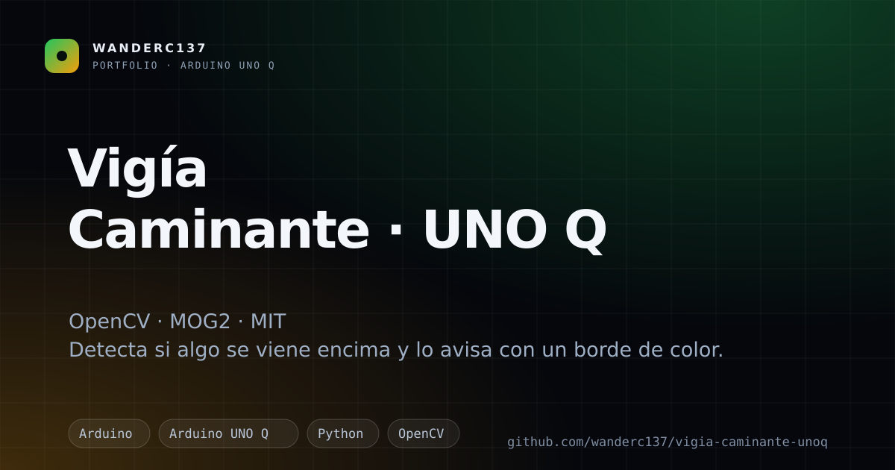

Vigía Caminante
Un teléfono camina por la feria. La UNO Q mira lo que ve el teléfono, calcula si algo se le va a venir encima y lo grita con un borde de color: verde, ámbar, rojo. Todo en la placa, sin nube.

El problema y la solución
Qué resuelve y por qué está construido así.
El problema
En una feria la gente camina mirando pantallas, no el piso. Un chico con un teléfono grabando puede cruzarse con otro visitante sin verlo. La pregunta no es «¿qué objetos hay?» sino «¿estoy a punto de chocar con algo?».
La solución
Un semáforo, no una lista: visión clásica (MOG2 + contornos + tracking) estima el riesgo de colisión frontal (cercanía, velocidad, looming, TTC) y lo reduce a un solo color en el borde de la pantalla. 100 % local y explicable en el stand.
Cómo funciona, paso a paso
Del frame del teléfono al color del borde.
Captura
Recibe frames MJPEG 1080×1920 del teléfono (IP Webcam) y los reduce a 320 px de ancho para analizar. El modo demo genera un caminante sintético para probar sin cámara.
Sustracción de fondo
MOG2 aprende la escena vacía y devuelve «lo que se movió»; cierre 7×7 + apertura 5×5 dejan contornos limpios, con un calentamiento de 5 frames al arrancar.
Filtrado
Área mínima 200 px y aspecto máximo 5:1. Un objeto que llena el cuadro no se filtra: es amenaza máxima por definición.
Tracking
Asocia detecciones por IoU ≥ 0.3 y mantiene IDs persistentes con velocidad (vx/vy) y crecimiento de área (dA/dt, el «looming»).
Score de riesgo
Cinco pesos por objeto — cercanía 25 %, velocidad 20 %, looming 25 %, área 15 %, TTC 15 % — se combinan en un score 0..1.
Semáforo + overlay
El máximo score pasa por un EMA y una histéresis (800 ms de rojo mínimo) que decide el color del borde; se dibujan cajas, etiquetas y HUD sobre el stream.
Cómo está construido
Los componentes principales y cómo se conectan.

Teléfono (IP Webcam)
Android transmite MJPEG 1080×1920 por WiFi (192.168.1.9:8080). El hilo de captura reconecta con backoff si se corta.
Servidor HTTP :8030
ThreadingHTTPServer sirve la UI, /stream, /snapshot.jpg y la API JSON. Sin pip ni frameworks; no toca los puertos 8000/8010/8020.
Motor de visión
MOG2 → contornos → tracker → score de 5 pesos → histéresis. Todo en un hilo que atrapa sus excepciones y sigue vivo.
Decisiones de ingeniería
Decisiones que hacen que el proyecto sea útil, mantenible y honesto.
Visión clásica, no deep learning
MOG2 + contornos + tracking en CPU: sin pesos descargados, sin GPU, sin nube. Pesa menos de 1 MB y es explicable en el stand.
Semáforo con histéresis
Cuatro umbrales + 800 ms de rojo mínimo: el borde no parpadea entre colores en cada frame, se mantiene estable y se lee de un vistazo.
Explicable por diseño
El borde es la señal; el score, el TTC y las cajas explican por qué cambió de color. En una feria, poder decir «está abajo, crece y baja rápido» vale más que 2 puntos de precisión.
Calibración en vivo
POST /api/config cambia modo, URL y umbrales sin reiniciar. El lote es atómico: si los umbrales quedan incoherentes responde 400 y no aplica nada.
Modo demo
Un caminante sintético recorre verde → ámbar → rojo → ámbar → verde en 10 s: sirve para verificar UI, overlay, stream e histéresis sin tocar la cámara real.
Auto-recuperable
Watchdog de señal (frame_age > 2000 ms → gris) y cada hilo atrapa sus excepciones: un frame corrupto no tira el servicio de feria.
Lo que se mide, se verifica
Sin «magia»: números reales tomados en la placa con el teléfono transmitiendo a 1080×1920.
Métricas de referencia
fps de proceso 10.3 – 14.0
latencia mediana ≈ 55 ms
RSS 190 – 230 MB (≈6 % de 3.6 GB)
CPU 120 – 155 % de 400 %
320 px analizar · 540 px mostrar
JPEG calidad 70 · puerto 8030
Con qué está construido
Tecnologías y herramientas que sostienen el proyecto.
# En la placa: estado del servicio y logs $ ./scripts/servicio.sh status # Despliega a la UNO Q por ssh (puerto 2222) $ ./scripts/desplegar.sh # Estado en vivo del semáforo $ curl -s http://192.168.1.5:8030/api/estado
Todo está escrito
Cada decisión, cada límite y cada comando están documentados en el repositorio. Sin folletos: lo que funciona se muestra, lo que no, también.
Guía completa
Qué es, cómo funciona, instalación y límites.
Abrir documento DATASHEETManual de operación
Operación paso a paso, calibración y problemas.
Abrir documento DEVELOPERGuía de código
Módulos, hilos, fórmulas, API y extensión.
Abrir documento SERVICIORunbook de la placa
SSH, servicio, guardianes y checklist de feria.
Abrir documento BITÁCORABitácora
Decisiones, tropiezos y lecciones aprendidas.
Abrir documento CATÁLOGOArduino UNO Q
Todos los proyectos de la sección, con página y repo.
Abrir documento¿Construimos algo así?
Si te sirve o quieres construir algo parecido, el código está abierto.